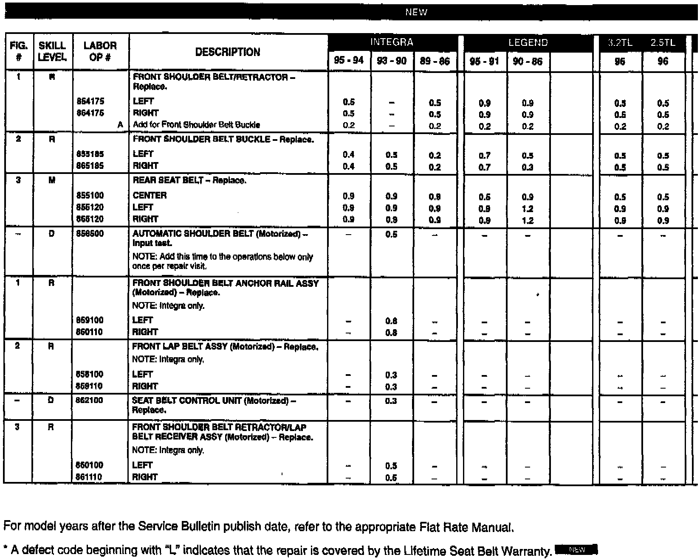

Front Seat Belt Replacement Warranty Policy.
January 16, 1996BULLETIN NO.
92-020
YEAR
ALL
MODEL
ALL
VIN APPLICATION
ALL
Front Seat Belt Replacement Warranty Policy
(Supersedes 92-020, dated March 16, 1992)
Warranty policy for front seat belt replacement is to replace either the belt/retractor mechanism or the buckle when either does not work properly. Warranty covers the replacement of only the failed half of a belt, not the entire assembly (see PARTS INFORMATION).
COMPONENT REPLACEMENT
Front seat belts are made by several suppliers, and some are sold as individual components (two separate halves); they are not stocked as a complete set. Therefore, whenever you replace a belt, make sure the new belt half is the same type and from the same manufacturer as the original - otherwise, the belt may not buckle properly.
To determine the manufacturer and type (or "model") of the belt, look for the white tag on the original belt in the car. The tag is on the retractor side of the belt (visible at the lower attachment point), or on the belt if you pull the belt all the way out.
From the tag, mark down the manufacturer's name (either Nippon Seiko K.K. or Takata), the belt "model" number, and the date of manufacture.
If the tag is missing or illegible, look on the buckle half of the belt for the name Nippon Seiko K.K. or the stylized "T" mark for Takata.
NOTE: Some seat belts may have NSK Warner K.K. as the manufacturer's name. Use Nippon Seiko K.K. belts as the replacement.
Take the information to your Parts Department to order the proper replacement belt.
NOTE: For more information on seat belts and seat belt related items read:
- 2-Point Automatic Seat Belt Troubleshooting (ServiceNews, July "90")
- Lap Belt Retracts Slowly (Service Bulletin 90-008, April "90")
- Twisted Belt Buckles (ServiceNews, March "91")
- Seat Belt Slow to Retract (Service Bulletin 91-050, Revised January "92")
- Understanding the Automatic Shoulder Belt System (Service News, January "92")
�`�<:

Refer to your Service Bulletin Index and the ServiceNews Index for model specific information. Most repairs do not require seat belt component replacement.
PARTS INFORMATION
For front seat belt replacement ordering information and availability, contact your parts center.
WARRANTY INFORMATION
Warranty Coverage:
Seat belts that fail to function properly during normal use are covered under warranty for the useful life of the car.
Warranty Does Not Cover:
- Malfunction due to abuse, alteration, accidental damage, or damage resulting from a collision or misuse.
- Replacement of a properly functioning seat belt for cosmetic or comfort reasons.